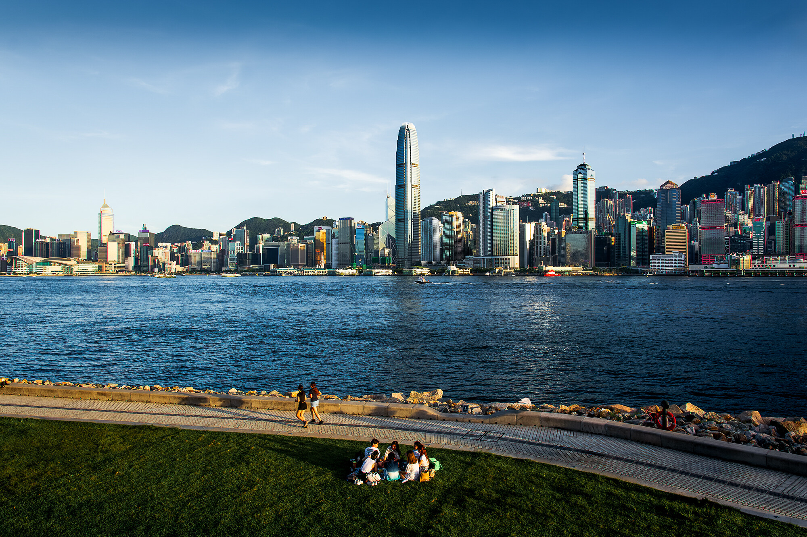
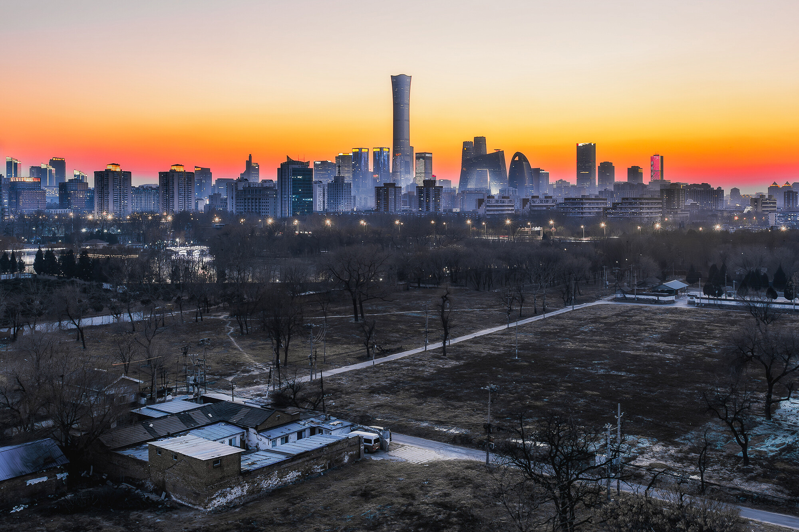
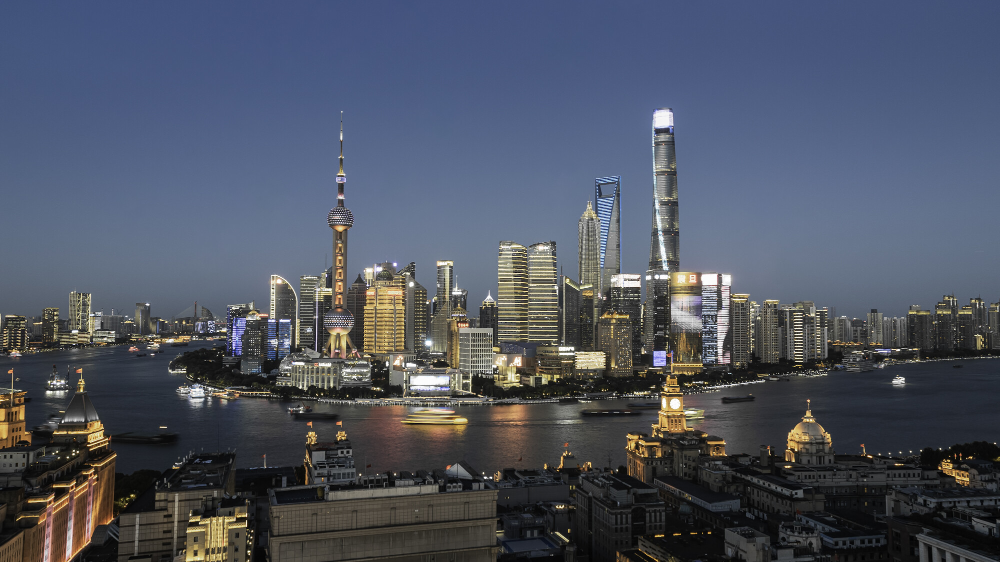
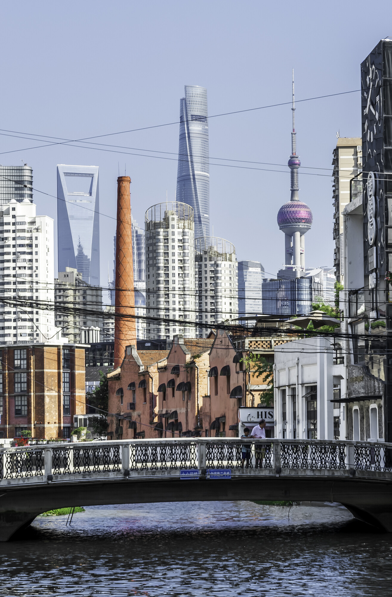
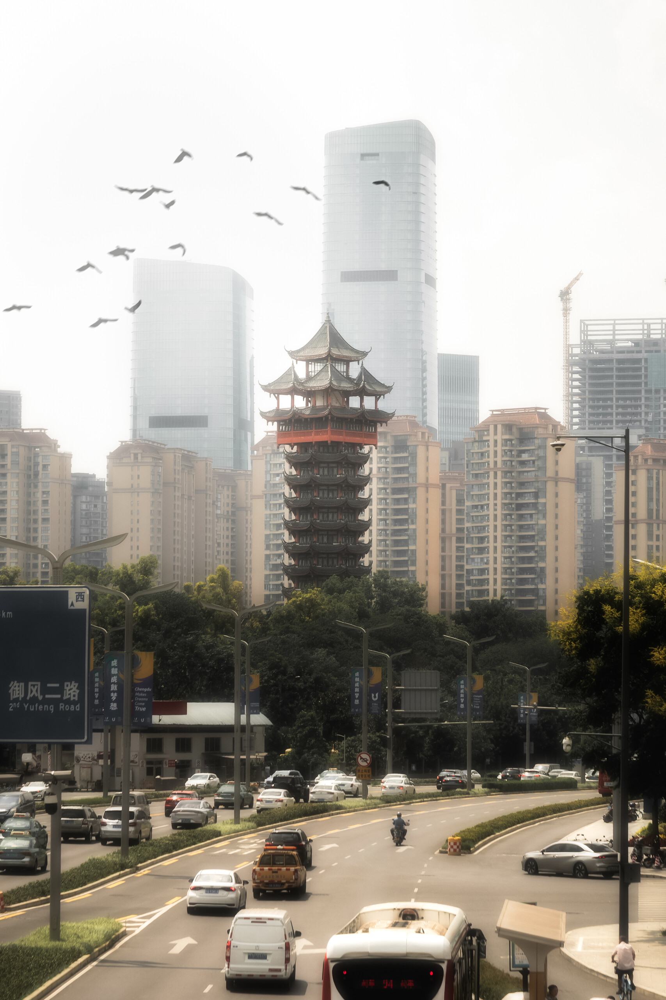

URBAN FRAGMENTS
城市切片
关于城市结构、光影与日常秩序的观察
建筑、道路、灯光以及匆匆经过的人， 共同构成城市不断变化的表情。 我尝试从日常景象中截取那些短暂而安静的片段。






URBAN FRAGMENTS
关于城市结构、光影与日常秩序的观察
建筑、道路、灯光以及匆匆经过的人， 共同构成城市不断变化的表情。 我尝试从日常景象中截取那些短暂而安静的片段。




